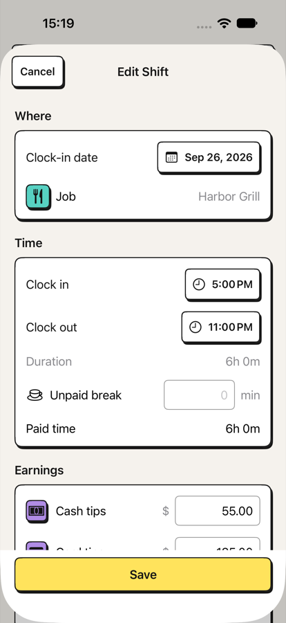
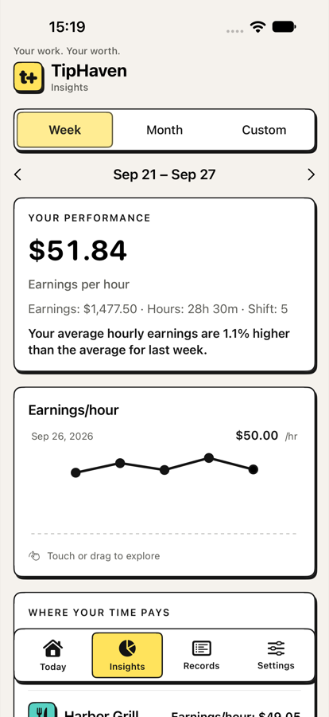

Every detail, one result
Know what you actually made.
See the full path from cash and card tips through tip-out and wages to total earnings. No mental maths at the end of a long night.

 TipHaven
TipHaven
Tip & shift tracker for iPhone
Track tips, hours, wages and tip-outs in seconds—then see exactly what every shift was worth and where your time pays best.
Log your first five shifts free · One-time lifetime unlock · No account required

01 / The real question
Your paycheck does not tell the whole story
Cash, card tips, tip-out and wages live in different places.
Hours alone cannot tell you which job or day pays your time best.
TipHaven turns every completed shift into one number you can compare.
02 / How it works
Record only what matters to you. TipHaven handles the shift maths and keeps the history useful.
Add cash and card tips, hours, wages and tip-out. Optional fields cover sales, covers, roles, sections and notes.
TipHaven calculates net tips, wage earnings, total earnings and what the shift paid per hour.
Compare jobs, roles, weekdays and periods to see where your time has paid best.
Try the shift maths
Use sample numbers or enter your own. The calculation happens only in this browser and is not saved.
cash + card − tip-out + wages = total earnings
Every detail, one result
See the full path from cash and card tips through tip-out and wages to total earnings. No mental maths at the end of a long night.

Work patterns
Compare earnings per hour across jobs, weekdays and periods. See whether the busiest room is actually the best use of your time.

Goals & history
Follow a monthly earnings goal, review your latest shift and search your complete ledger by date, job, role, section or notes.
03 / Private by design
There is no TipHaven account. The shift details you enter stay on your iPhone unless you choose to export or back them up.
TipHaven is your independent personal record.
Your financial entries are not used to follow you across other companies’ apps or websites.
You decide when and where an export or backup is created.
Simple access
Log five shifts across all your jobs and use every feature. When you want to add more, one lifetime purchase unlocks unlimited shift logging. There is no subscription in the current offer.
See TipHaven on the App Store ↗︎5shifts freethen unlock unlimitedFree tools
Quick calculations and practical guides for understanding tipped work.
Calculators
Tips or sales basis, wages and true hourly earnings.
Open calculator → Tip poolingAdd the team and distribute every cent proportionally.
Open calculator → Tip sharingAssign role percentages and see each person’s share.
Open calculator → Paycheck estimateEstimate gross earnings and optional withholding.
Open calculator →Practical guides
04 / Questions
TipHaven is built for servers, bartenders, baristas, waiters, hospitality professionals and anyone whose earnings change from shift to shift.
Track cash tips, card tips, tip-out, hourly wage, hours, jobs and optional sales, covers, roles, sections and notes. You choose which optional fields appear.
No. You enter the details you want to keep. TipHaven is a personal record—not payroll, tax, accounting, legal or financial advice.
Your shift records stay on your iPhone. Kestora Labs cannot remotely view or recover them. You control exports, backups, edits and deletion.
Yes. Choose one supported currency for the ledger. Changing it relabels existing values and does not perform currency conversion.
Your first five shifts are free. After that, a one-time lifetime purchase unlocks unlimited logging. The App Store shows your local price before purchase.
Visit TipHaven Support or email degeestkenneth@gmail.com. Please do not include earnings, workplace details or backup files in a support message.
Every shift tells you something.